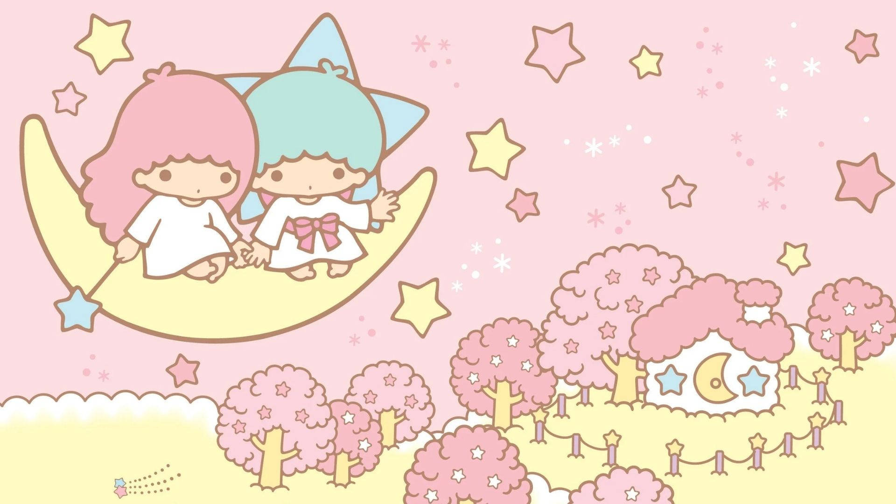

Little Twin Stars
Cinnamoroll
Pompompurin
Pochacco
My Melody
Kuromi
Hello Kitty
Little Twin
Stars

Facts
- Japanese name: キキララ (Kikirara)
- Place of birth: Omoiyari Star
- Birthday: December 24
- Zodiac Sign: Capricorn
- Gender: Male and female
- Species: Mythical creatures
- Favorite food: Sweets
- Favorite song: Sparkling Stars
- Favorite word: Consideration
- Fun Fact: Little Twin Stars are actually as big as the moon!
1. WHAT ARE THE LITTLE TWIN STARS CALLED?
Let’s start getting to know these Sanrio twins by their names! The Little Twin Stars are more commonly known in Japan as Kikirara or Kikilala, which is a combination of their names. Kiki is the younger brother with short blue hair, and Lala is the older sister with pink hair.
2. ARE LITTLE TWIN STARS HUMANS?
The Little Twin Stars are anthropomorphic stars from Sanrio. Wait, what? That long and fancy-sounding word is used to describe something that has human characteristics. These adorable twins are anthropomorphic stars that are made to look like humans! That’s why Sanrio’s official website best describes them as a “fushigi-kei” or mystery rather than humans.
3. WHO CREATED KIKI AND LALA?
These adorable twins came from the kawaii world of Sanrio! In 1975, the talented Sanrio artist Yoko Matsumoto came up with the idea of crafting “animal and child characters” for Christmas. Among them were a rabbit character later known as My Melody, and the charming “twin star child characters” who eventually became the beloved Little Twin Stars characters. Sanrio even asked readers to submit Little Twin Stars name suggestions, where Kiki and Lala were chosen.
4. DO LITTLE TWIN STARS HAVE FAVORITES?
Yes, they do! Kiki and Lala each have their favorite things that make them unique and loveable. While both love sweets, Kiki especially likes the pancakes that Lala makes. Most of the time, these two like opposite things! Kiki’s favorite seasons are spring and summer, and Lala prefers autumn and winter. As for their hobbies, Kiki loves going outdoors to fish for stars and explore while Lala likes staying inside to draw and write poems.
5. WHAT ARE THE LITTLE TWIN STARS’ PERSONALITIES?
These twins come with starry personalities that complement each other perfectly! Lala is caring and she shows it by carrying a magical star wand that readily helps others. Aside from that, this star wand also helps her cook delicious dishes, especially the soup that she’s really proud of! It might be due to Lala’s soft and kind heart that she’s also easily scared and a bit of a crybaby.